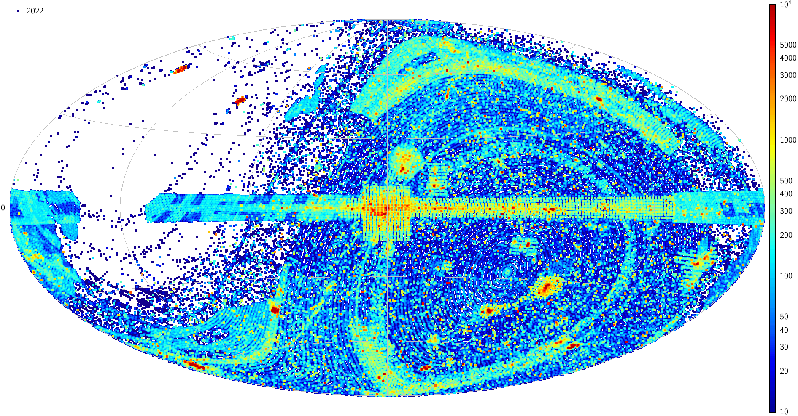
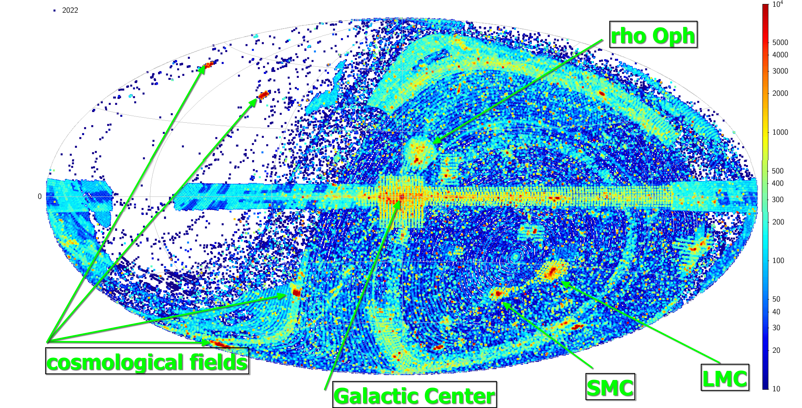

Astronomy articles index
- ESO archive
- Monturaqui crater
Go back to the main page
Temporal evolution of sky coverage of observations stored at European Southern Observatory archive
publication date 2022/07/31

In this video
I portrayed the temporal evolution of the content of the files stored at the European Southern Observatory
(ESO) Science Archive Facility (SAF)
from the begin of the creation of the ESO archive (1998) till now.
Each point represent a single file contained in the ESO archive in
galactic coordinates.
The calibration files (like bias, dark, flat fields, etc) are not considered.
The points represent any kind of data in the ESO archive: images, spectra, data cubes, interferometry, radio.
For visualization purposes the size of each point is fixed and doesn't represent the real extent in the sky of the data.
The color scale represent the density of files in the sky.
Here there is an annotated version of the content of the archive in July 2022.
The ESO archive contains data collected with ESO telescopes and also from UKIRT telescope
in the northern emisphere.
This map represent the data stored in the ESO archive in galactic Aitoff projection.
The galactic center is at the center of the image, the galactic equator is horizontal at the middle of the image.
On the left side of the image the galactic longitude increase from 0 to 180,
while on the right side it decrease from 360 to 180.
The almost empty region on the left of the image is the region of the sky at declinations
greater than 45 degrees, where ESO telescopes cannot observe.
Due to their intrinsic interest, some regions of the sky are observed more often
than others, like the
the Galactic Center region, the Large Magellanic Cloud, the Small Magellanic Cloud,
the star forming region of ρ Ophiuchi.
The region along the galactic plane, is filled with data from the VISTA/VVV survey (southern emisphere)
and from data from UKIRT/WFCAM (northern emisphere).
The overdensities at high galactic latitudes are generated by the surveys (imaging)
conducted with VISTA and VST telescopes.

This research has made use of the services of the ESO Science Archive Facility.
This work make use of TOPCAT
Go to the index
Monturaqui crater (Chile)
publication date 2022/08/01
This page is article as a collection of travel trip suggestions for visiting Monturaqui
crater in Antofagasta region, Chile (coordinates 23°55'41.40"S 68°15'41.91"W),
that I compiled after two visits in 2015 and 2019.
The crater is quite isolated and there is no telephone network in a radius of about
40 km from the crater itself.
Also there is no water, any kind of water, and no one lives in the same radius.
Arrival
Flight from Santiago to Calama, and here rent the cars at the airport.
For security reason plan to go with at least two 4x4 cars.
Buy all the food, water and other stuff in the mall in Calama, San Pedro de Atacama has some small shops were you can found bread and fruits, but they are not very big shops, and maybe you cannot encounter what you need.
Drive from Calama to San Pedro de Atacama, and pass the night here.
Before leaving to the crater, be sure to contact the Carabineros de Chile in San Pedro de Atacama and provide them the full information about your trip details.
(Carabineros de Chile are the only ones that can help you in case of problems, i.e. mechanical problem with the cars, etc)
The trip
Drive from San Pedro de Atacama to the south east along the road n. 23 that border the Salar de Atacama.
Along the road you encounter the access portal to the astronomical observatory of ALMA.
Pass trough Toconao, 3 km after this town at the intersection with B-355 follow straight along the route n.23.
Route B-355 is not paved, but covered with bichufita (salt) and hence is slower than route n.23.
Continue for 30 km, then just before a big red hill on the right, take the road B-379 on the right, and follow it for 7 km up to the intersection with B-355.
At the intersection take on the left, and from here B-355 is paved.
Follow the road for 23 km up to the town of Peine (nice very old church, old historic houses and rock art).
Pass the town and follow the main road for about 11 km in direction Tilomonte.
The main road (paved) go toward a lithium mine, take the intersection to the left direction Tilomonte
(if the road is not clearly visible follow the direction of the big trees that are visible) for about 1 km.
Here you encounter an intersection and turn on the right (no road signals), without entering in Tilomonte,
the first kilometers are difficult because the road disseminated by rocks left by some flooding
(the road pass in an alluvial fan).
Drive with caution for the next 15 km, then go up the hill paying attention to the holes in the road.
At the top of the hill drive for about 9 km in a flat land up to cross an high voltage line.
From the flat there is a paramount vision of volcanoes Pular an Socompa.
Here take the track on the right and follow it for about 350 m, then take the track on the left that climb the hill.
This part is the most difficult part of the track for about 10 km, that is far from a good shape.
The floodings of period 2015-2018, have almost cancelled the previous existing track
and in some point the road is completely missing, obliging you to drive completely offroad
in some potential dangerous situations due to the presence of many cliffs.
A pair of shovels and some metallic axes could help passing the most difficult part of the road.
A previos safe place to park the car in 2015 was at these coordinates
23°56'15.81"S 68°15'45.14"W, that was a reasonable walking distance from the crater (1 km)
in north direction.
However the floodings make this site no more acessible, so the best solution is continue until
the road cross the creeek turning on the right.
At this point some tracks turn on the right going backward. The right one for going to the crater
is indicated by a pile of rocks near a electrical tower.
Now follow the track for about 4 km, you first found a pirca (house made with rocks).
This is the actual best place to station the car for not damaging the site of the crater.
With a short walk of about 1 km you will reach the rim of the crater.
PRESERVATION RULES
For preservation of the site, when you are in the crater and in the surroundings,
please do not collect any rocks, do not make excavations also do not interfere
with the site moving elements, or damaging rocks, plants, animals.
Some people already caused damages to the site entering with cars and trucks to
the bottom of the crater, other have made illegal excavations, do not copy those unfair behavior.
Go to the index